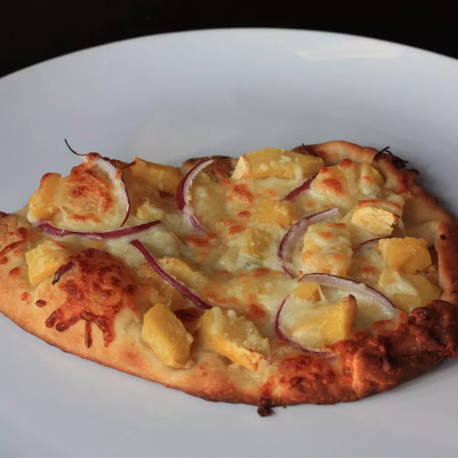

Butternut Squash Flatbread

Description
Looking for a bit of a change? Here's a great healthy option if your still craving some pizza
Ingredients
- 1 tablespoon cornmeal, or as needed
- 1 pound prepared whole-wheat pizza dough
- 1 tablespoon olive oil
- 4 ounces low-fat mozzarella cheese, grated
- 2 cups cooked butternut squash cubes
- ½ cup thinly-sliced red onion
- 1 tablespoon grated Parmesan cheese, or to taste
- ground black pepper
- 3 cloves garlic, minced
- 2 ounces Balsamic Drizzle
Directions
- Preheat oven to 450 degrees F (230 degrees C). Sprinkle cornmeal onto a baking sheet.
- Roll out dough to 1/4-inch thickness using a rolling pin on a work surface. Place dough on prepared baking sheet and brush olive oil thoroughly over surface.
Cook's Note:
Use a bit of flour if dough is sticking when you roll it out.
- Layer dough with mozzarella cheese, butternut squash, and red onion. Sprinkle dough with Parmesan cheese and black pepper; top with garlic.
- Bake in the preheated oven until golden brown, 25 to 30 minutes.
- Drizzle Balsamic over Flatbread
- Serve and Enjoy!!